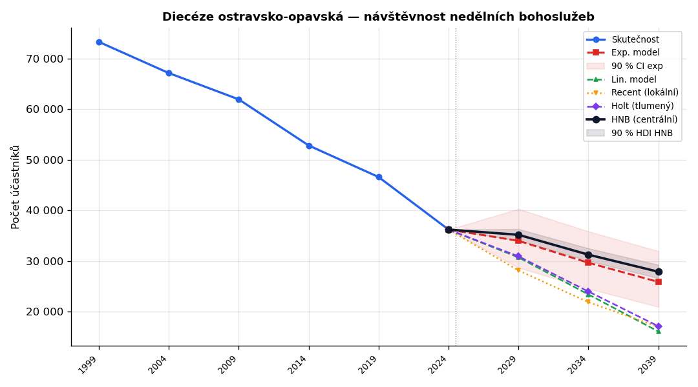
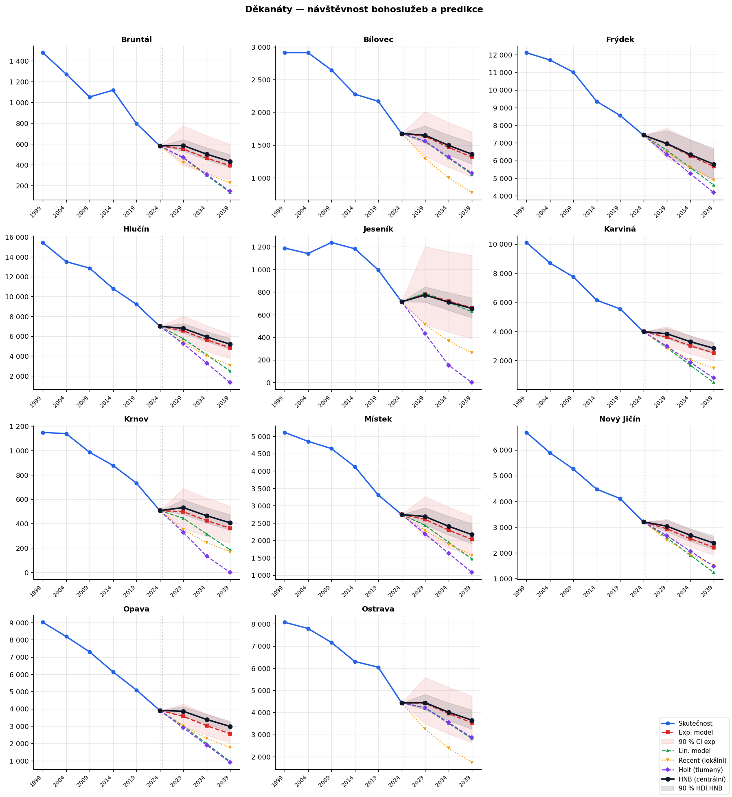
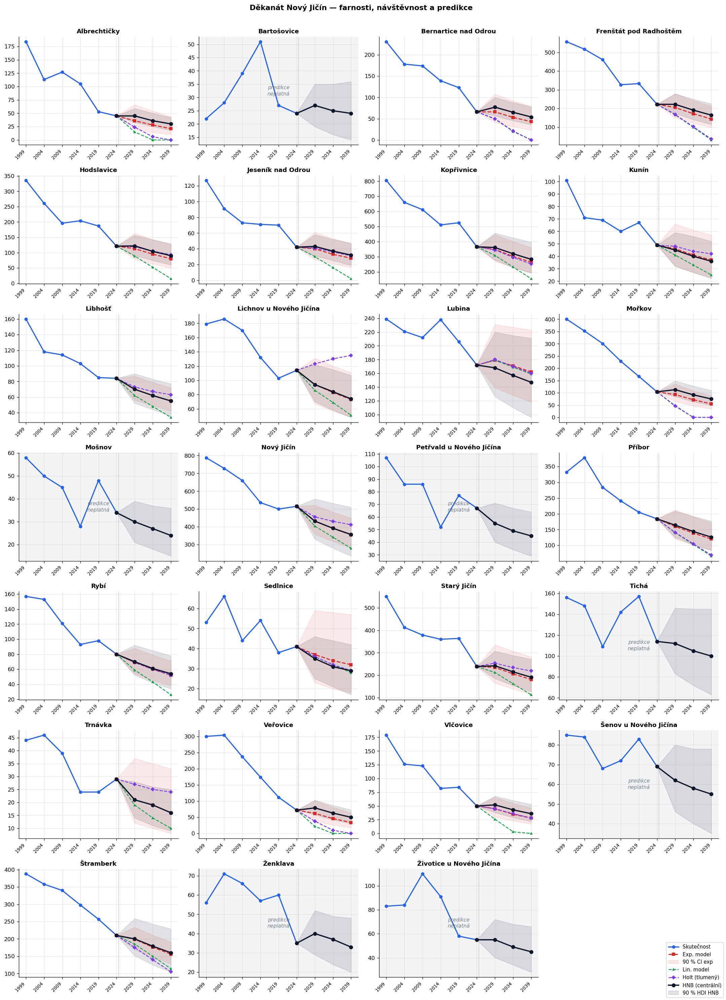
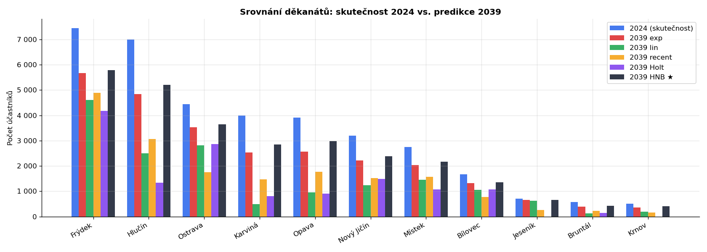
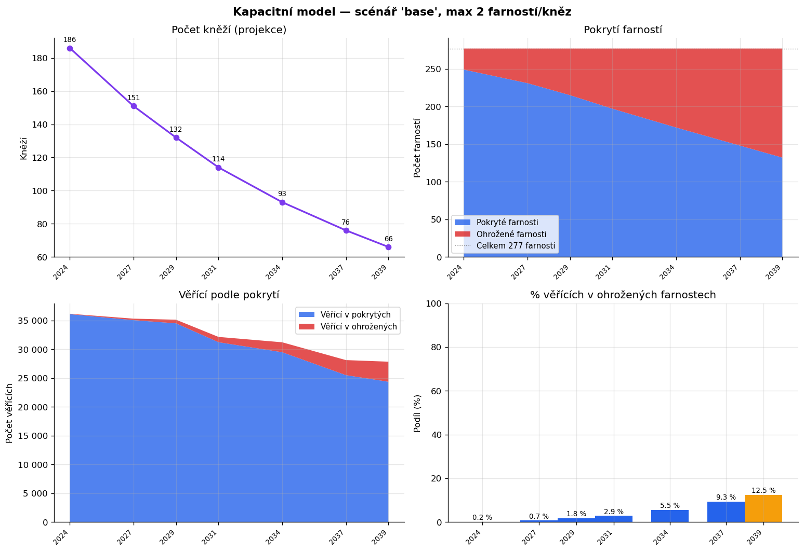
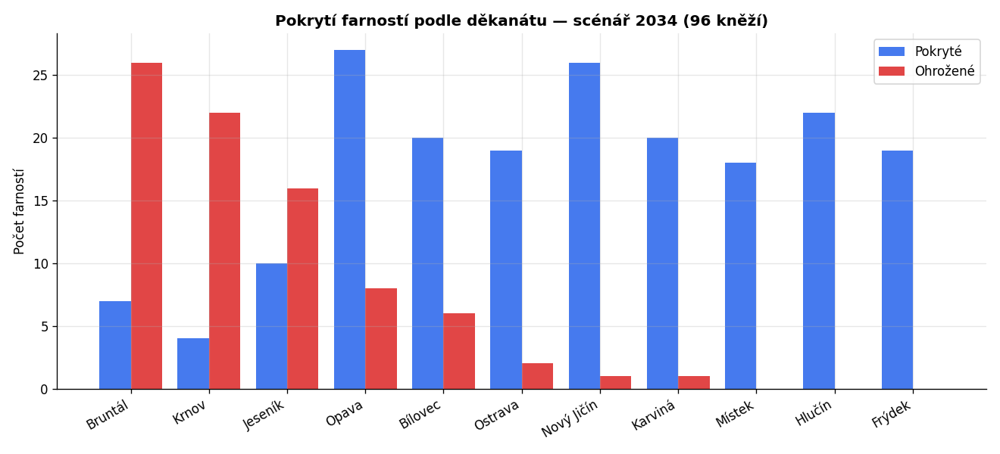
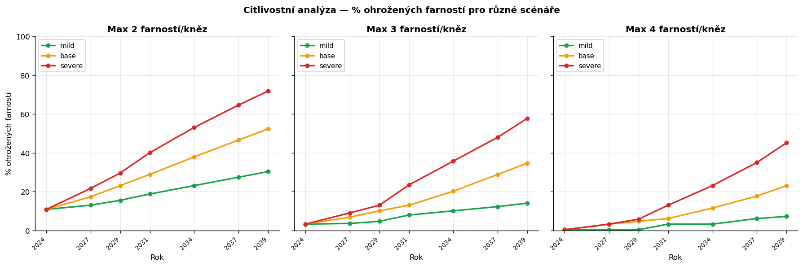

Diecéze ostravsko-opavská
Vývoj 1999–2024, prognóza do 2039, kapacitní model — verze 3
📋 Changelog verzí (verze 1 → 2 → 3)
Česká biskupská konference organizuje celostátní sčítání každých pět let, vždy o druhé říjnové neděli. Účastníci anonymně vyplňují lístek s věkem, pohlavím a ekonomickou aktivitou. Data pokrývají 277 farností Diecéze ostravsko-opavské za roky 1999, 2004, 2009, 2014, 2019 a 2024 — celkem 1 662 záznamů. Zdrojem je soubor scitani-srovnani-1999-2024-web.csv zveřejněný diecézí.
Pro 57 řádků (z 1 662) je osob_celkem NULL — typicky malé farnosti, které nebyly tehdy součástí sčítání. Tyto chybějící hodnoty jsou v této verzi explicitně rozlišeny od skutečné nuly.
Ze stránek doo.cz/katalog/farnosti/ bylo staženo personální obsazení 277 farností. V databázi je celkem 249 unikátních osob, z toho 186 aktivně sloužících kněží (Farář, Administrátor, Adm. excurrendo, Farní vikář, Výpomocný duchovní). Zbytek (63) tvoří jáhni, pastorační asistenti a kněží na odpočinku.
Z hesla Diecéze ostravsko-opavská jsou převzata historická data o počtech kněží, řeholníků, křtů a podílu katolíků. Údaje za 2020–2024 zatím chybí; doporučení pro další aktualizaci.
Hlavní scénář (base) předpokládá −50 % za 10 let. Alternativně počítáme mild (−30 %/10 let) a severe (−65 %/10 let). Předpoklad není odvozen z dat — neexistuje historická časová řada poklesu kněží v DOO 2020–2024 — slouží jako pracovní hypotéza. Viz citlivostní analýza v sekci 8.
Pro každou entitu (farnost, děkanát, diecéze) jsou fitovány modely na historických datech 1999–2024. Centrálním modelem pro kapacitní analýzu je hierarchický NB model (HNB). Ostatní modely slouží jako referenční srovnání.
y = a · eb·t, OLS na log(y) (pouze body y > 0). Demograficky přirozený model konstantního relativního tempa.y = a + b·t. Pro delší horizont vede k záporným hodnotám (clipované na 0).damped_trend=True, optimalizováno přes MLE). Adaptivní váhování historických dat; tlumení zabraňuje přílišné extrapolaci. V leave-2024-out validaci dosahuje podobné přesnosti jako lin model (wMAPE ≈ 26 %).Validita predikce: predikce je označena za neplatnou (validni = 0), pokud:
Z 277 farností je 177 platných predikcí (64 %) a 100 neplatných. Neplatné nelze pro plánování použít — typicky malé farnosti s nesouvislými řadami (Býkov, Travná, Zálesí, atd.).
Kromě bodové predikce model počítá 90 % predikční interval metodou OLS: tn−2, 0,95 · σ · √(1 + 1/n + (t*−t̄)²/Sxx). Faktor extrapolace (t*−t̄)²/Sxx zajišťuje, že interval se rozšiřuje s rostoucím horizontem. Leave-2024-out validace ukázala coverage 76 % (dříve 45 % před opravou). Zbývající deficit oproti 90 % odráží strukturální zrychlení poklesu po roce 2019, které nelze zachytit parametrickou nejistotou.
Zacházení s nulami (v3): hodnota osob_celkem = 0 ve zdrojových datech je interpretována jako skutečná nulová účast, nikoli jako chybějící záznam. Exp model fituje pouze kladné body (y > 0) — nuly do fitu nevstupují, ale jsou uchovány jako metadata (zero_count, last_value). Farnost s poslední hodnotou 0 a neplatným modelem dostane v kapacitním modelu fallback fallback_zero.
Model kombinuje projektovaný počet kněží s počtem farností a odhaduje, které farnosti ztratí pravidelnou pastorální péči. Klíčové parametry:
V rámci děkanátu jsou farnosti přidělovány podle velikosti — nejprve největší. Verze 3: kapacita kněží se rozděluje metodou největšího zbytku (přesný celkový součet). Platné farnostní predikce (validni=1) používají exp model; neplatné (validni=0) dostávají fallback last_known nebo fallback_zero — ve výsledcích označeno sloupcem vericich_zdroj.
Za 25 let (1999–2024) klesla návštěvnost o 51 %. Důležitý detail: pokles akceleruje. Pětileté propady byly −8 % (1999→2004), −8 %, −15 %, −12 %, −22 % (2019→2024). Poslední pětileté období je nejsilnější — pravděpodobně postcovidový efekt. Pokles po roce 2019 zrychlil na úrovni diecéze a ve většině děkanátů; výjimkou jsou Místek (−19,7 % vs. −17,0 %) a Bruntál (−28,6 % vs. −27,0 %), kde se relativní tempo mírně zmírnilo.

| Děkanát | Farností | 1999 | 2024 | Změna |
|---|---|---|---|---|
| Frýdek | 19 | 12 114 | 7 436 | −38,6 % |
| Hlučín | 22 | 15 440 | 6 999 | −54,7 % |
| Ostrava | 21 | 8 075 | 4 432 | −45,1 % |
| Karviná | 21 | 10 102 | 3 985 | −60,6 % |
| Opava | 35 | 9 014 | 3 908 | −56,6 % |
| Nový Jičín | 27 | 6 681 | 3 203 | −52,1 % |
| Místek | 18 | 5 112 | 2 746 | −46,3 % |
| Bílovec | 26 | 2 912 | 1 676 | −42,4 % |
| Jeseník | 28 | 1 189 | 714 | −39,9 % |
| Bruntál | 33 | 1 478 | 582 | −60,6 % |
| Krnov | 27 | 1 149 | 507 | −55,9 % |

Děkanát NJ (27 farností) sleduje diecézní průměr (−52 %). Stabilní jsou Lubina (−28 %), Bartošovice (+9 %), s rychlým poklesem Veřovice (−76 %).

| Rok | Skutečnost | Exp model | 90 % CI exp | Lin model | Recent (lokální) | Holt (tlumený) | HNB ★ | 90 % HDI HNB |
|---|---|---|---|---|---|---|---|---|
| 1999 | 73 266 | — | — | — | — | — | — | — |
| 2024 | 36 188 | — | — | — | — | — | — | — |
| 2029 | — | 33 971 | 28 657 – 40 271 | 30 696 | 28 122 | 30 904 | 35 161 | 34 050 – 36 291 |
| 2034 | — | 29 633 | 24 510 – 35 827 | 23 378 | 21 853 | 23 950 | 31 233 | 30 016 – 32 481 |
| 2039 | — | 25 848 | 20 913 – 31 948 | 16 061 | 16 982 | 17 097 | 27 863 | 26 591 – 29 233 |

Pro otestování predikčních modelů byla provedena leave-2024-out validace: modely byly fitovány pouze na roky 1999–2019 a předpovídali rok 2024. Pak se porovnaly se skutečností.
| Model | Predikce 2024 | Skutečnost | Chyba | 90 % CI |
|---|---|---|---|---|
| Exp | 42 220 | 36 188 | +16,7 % | 40 330 – 44 200 (✗ mimo) |
| Lin | 40 022 | 36 188 | +10,6 % | — |
| Recent (2) | 41 068 | 36 188 | +13,5 % | — |
| Holt | 40 143 | 36 188 | +10,9 % | — |
Na úrovni farností je MAPE pro exp model 44,0 %, vážený MAPE 25,0 %, RMSE 59. Coverage 90 % CI po opravě OLS intervalu: 76 % (dříve 45 %). Pro horizont 2039 (15 let) lze chybu očekávat ještě vyšší.
| Segment | n | MAPE | wMAPE | bias | Coverage CI |
|---|---|---|---|---|---|
| Všechny farnosti | 261 | 44,0 % | 25,0 % | +24,4 | 76 % |
| Validní predikce (validni=1) | 173 | 29,9 % | 20,1 % | +25,3 | 80 % |
| Nevalidní (validni=0) | 88 | 71,6 % | 46,5 % | +22,6 | 69 % |
| Velikost 2024 ≥ 100 | 95 | 26,8 % | 21,3 % | +46,4 | 79 % |
| Velikost 2024 = 30–99 | 90 | 44,1 % | 39,7 % | +17,2 | 80 % |
| Velikost 2024 = 1–29 | 76 | 65,2 % | 55,0 % | +5,5 | 82 % |
Poznámka: nevalidní predikce mají téměř 2× horší chybu než validní. V kapacitním modelu v3 se nevalidní farnosti počítají přes fallback (last_known/fallback_zero), ne přes exp model.
Z celkového počtu 277 farností má 131 vlastního faráře. Zbývajících 146 nemá vlastního faráře; 134 z nich spravuje kněz s rolí administrátora excurrendo (správce z jiné farnosti). Někteří kněží pokrývají až 7 farností. Pojem „aktivní kněz" zahrnuje 11 rolí schopných celebrovat nedělní mši (faráři, administrátoři vč. excurrendo, farní vikáři, výpomocní duchovní, rektoři kostelů).
| Role | Počet záznamů |
|---|---|
| Administrátor excurrendo | 135 |
| Farář | 131 |
| Farní vikář (kaplan) | 33 |
| Jáhen trvalý | 31 |
| Samostatný past. asistent | 19 |
| Na trvalém odpočinku | 13 |
| Výpomocný duchovní | 9 |
| Administrátor | 7 |
Model simuluje pokrytí farností při exponenciálním poklesu kněží o 50 % za 10 let, s geografickou alokací (kapacita kněží proporčně k dnešnímu stavu po děkanátech). Hlavní scénář: max. 2 farnosti/kněz.
| Rok | Kněží | Kapacita | Pokrytých | Ohrožených | Věř. v ohrož. |
|---|---|---|---|---|---|
| 2024 | 186 | 372 | 247 | 30 | 82 |
| 2027 | 151 | 302 | 229 | 48 | 329 |
| 2029 | 132 | 264 | 213 | 64 | 613 |
| 2031 | 114 | 228 | 197 | 80 | 977 |
| 2034 | 93 | 186 | 172 | 105 | 1 663 |
| 2037 | 76 | 152 | 148 | 129 | 2 659 |
| 2039 | 66 | 132 | 132 | 145 | 3 243 |


Mapy zobrazují všechny farnosti s GPS. ● Modré jsou pokryté, ● červené ohrožené. Velikost odpovídá počtu věřících.
Hlavní výsledky zásadně závisí na dvou nejistých parametrech: tempu poklesu kněží a praktickém limitu farností na kněze. Tabulka ukazuje rok, kdy v daném scénáři poprvé vznikají ohrožené farnosti:
| Pokles kněží | Max 2 far./kněz | Max 3 far./kněz | Max 4 far./kněz |
|---|---|---|---|
| Mild (−30 %/10 let) | 2024 | ~stabilní | ~stabilní |
| Base (−50 %/10 let) | 2024 | 2024 | 2024 |
| Severe (−65 %/10 let) | 2024 | 2024 | 2024 |
Pozn.: všechna „2024" znamenají, že v některých periferních děkanátech (Bruntál, Krnov, Jeseník) už dnes existují farnosti přes limit. Velikost problému roste s časem.

Pokles věřících probíhá ve všech děkanátech bez výjimky. Pokles po roce 2019 zrychlil na úrovni diecéze a ve většině děkanátů — výjimkou jsou Místek a Bruntál, kde se relativní tempo mírně zmírnilo. Predikce 2039 je v rozmezí 17 000 (lin/recent) až 26 000 (exp); střed odhadu cca 20 000–22 000 osob (−40 až −45 % vs. 2024).
Personální problém je strukturální a geografický. V periferních děkanátech (Bruntálsko, Krnovsko, Jesenicko) už dnes 1 kněz spravuje 3–4 farnosti. Demografický pokles počtu kněží tuto disproporci dále zhorší — model „kritický rok 2031" z první analýzy podhodnocoval geografickou koncentraci problému.
Stárnutí komunity: vážený průměr věku stoupl z 45,3 let (1999) na 48,8 let (2024) — tj. +3,5 roku za 25 let, kdy přirozená biologická obměna by měla vést k poklesu, kdyby přicházeli mladí.
Slučování farností do pastoračních celků (např. místo 277 farností 80–100 celků). Kněz spravuje celek, bohoslužby rotují.
Výhoda: udržitelné i při 90 kněžích; zachovává regionální přítomnost.
Riziko: ztráta lokální identity, kanonické změny.
Systematické vzdělávání laiků pro liturgii slova, pohřby, katechezi. Kněz zajišťuje eucharistii.
Výhoda: nezávisí na počtu kněží; buduje místní komunitu.
Riziko: kulturní změna, teologické napětí.
Při zachování stávající struktury část kostelů ztratí pravidelnou bohoslužbu. Farnosti formálně existují, ale mše jednou za měsíc.
Výhoda: nevyžaduje aktivní rozhodnutí.
Riziko: neřízený zánik, ztráta věřících i budov.
dieceze_statistiky o roky 2020–2024 (počty kněží) a fitnout pokles kněží z dat.Lubina patří v děkanátu Nový Jičín mezi nadprůměrně stabilní (−28 % za 25 let oproti průměru −52 %). Vážený průměrný věk 38,9 let v 2024 patří k nejnižším v děkanátu. Kapacitní model ukazuje, že Lubina zůstává pokryta ve všech scénářích — důsledek vyšší aktivity, ne jen velikosti.